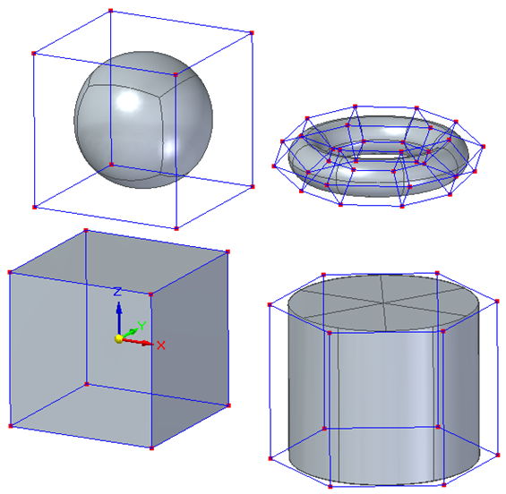
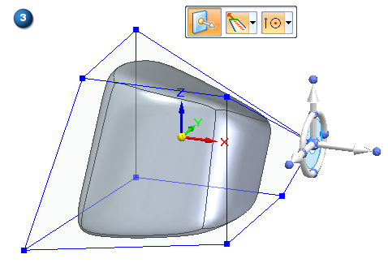
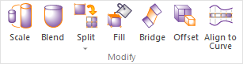

Subdivision Modeling workflow
The simple interaction of the tools in the Subdivision Modeling task environment lets you create shapes not easily modeled with traditional methods. Use the following workflow to develop the basic shape of your design, and then refine the shape and add detail to your design with other feature and surface modeling commands.
-
In a part or sheet metal document, open the Subdivision Modeling task environment by selecting the Surfacing tab→Free-Form group→Subdivision Modeling command
 .
. -
In the Subdivision Modeling environment, choose one of the commands in the Home tab→Shapes group as your starting point for creating new models:

-
Change the default initial shape dimensions (1),

And then right-click to display the control cage (2).

-
Modify the basic shape by pushing, pulling, and rotating elements of the cage body using the steering wheel and other synchronous tools (3). For more information, see:
Moving and rotate cage elements with the steering wheel

-
You can make minor modifications to the existing body using these commands in the Modify group:

-
Use the Scale command to change the size of a body:
-
In all dimensions (3 Axes Scaling option),
-
In two dimensions (Planar Scaling option),
-
Or in just one dimension (Linear Scaling option).
You also can control the origin of the scale (Uniform option).
-
-
Use the Blend command slider to control how much selected vertices, edges, or faces pull on the body shape, providing control over the curvature of the model around those cage elements.
-
Use the Split command to add subdivisions to a face or faces along an edge or across selected faces.
-
Use the Fill command to repair a shape by creating a missing face across connected edges. For more information, see Deleting and filling cage faces.
-
-
You can create more sophisticated shapes using these commands in the Modify group:
-
Move or create faces using Offset.
-
Connect cage faces or edges on one or more bodies with a Bridge.
-
Fit faces to a curve using Align to Curve.
-
As you create and as you edit, use symmetric mode to make subsequent local changes symmetric about a user-defined plane.
-
Using PathFinder in Subdivision Modeling, you can convert a subdivision body into a design body by selecting the Toggle Design/Construction command on its shortcut menu.
To learn how you can use your subdivision body, see Working with subdivision features.
-
Click Close Subdivision Modeling to exit the environment.
How do I
Move cage elementsMove using Quick Move
Use symmetric mode in Subdivision Modeling
Scale a subdivision model
Split subdivision model faces
Split faces with offset
Offset cage faces
Connect cage faces or edges with a bridge
Delete and fill cage faces
Align a shape to a curve
Learn more
Introduction to Subdivision ModelingUsing PathFinder with subdivision models
Working with cage elements
Creating subdivision features
Working with subdivision features
Moving and rotating cage elements
Look up more details
Subdivision Modeling commandBox command in Subdivision Modeling
Box command bar
Cylinder command in Subdivision Modeling
Cylinder command bar
Sphere command in Subdivision Modeling
Sphere command bar
Torus command
Torus command bar
Scale command in Subdivision Modeling
Blend command
Show Blend Values command
Split command
Split with Offset command
Bridge command
Align to Curve command
Cage Style command